ТОМ I · ЛИСТ F · 06 / 09
МОГИЛА
От погоста к кладбищу и архитектура имени
Русская могила — прежде правовой предмет, а потом священный. Где можно лежать мёртвым, решали указы, эпидемии и городские бюджеты по меньшей мере так же часто, как обычай.
1723 год — наши дни · Москва, Санкт-Петербург, Пушкин, российская провинция · Православие; государственное регулирование; многоконфессиональные некрополи
F / 01
Указ 1723 года
Указом Петра I от 10 октября 1723 года погребения внутри городов были ограничены — за исключением знатных лиц, — поскольку погосты при церквях и монастырях переполнились. По «Православной энциклопедии», тот же указ предписывал сравнять возвышающиеся надгробия и заменить рельефные изображения на святынях живописными. В старом описании Н. П. Розанова приказ опустить надгробия вровень с землёй отнесён к более раннему указу от 12 апреля 1722 года, а в одной научной статье указ о погребении датирован 16 октября, а не 10 октября. Атлас сохраняет 10 октября, как у «Православной энциклопедии» и Розанова, а вопрос о приказе про надгробия считает нерешённым.
Мера не удержалась. После смерти Петра в 1725 году погребения на погостах возобновились, и потребовалась катастрофа 1771 года, чтобы перемена стала устойчивой. В том году чума в Москве убила десятки тысяч человек, и для их приёма основали новое кладбище в Ваганькове; первыми там хоронили безымянных москвичей.
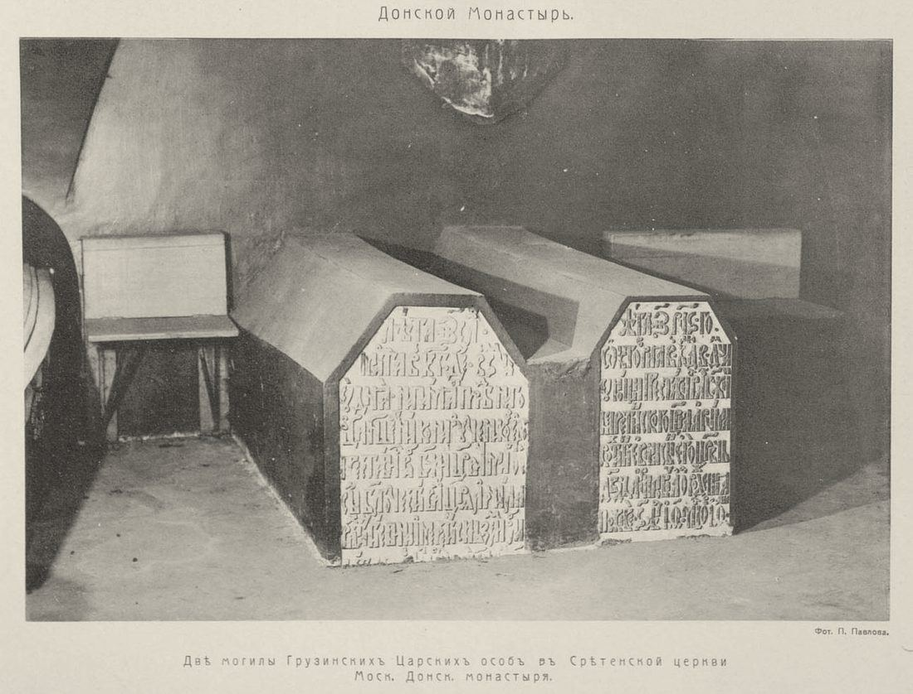
F / 02
Кладбище как городской предмет
С конца XVIII века кладбище выходит из ведения прихода и переходит в городское управление: стены, ворота, план, реестр, плата. У мёртвых появился адрес. Это момент, когда русское кладбище становится читаемым как институция, — и момент, когда становится видна разница между погостом и некрополем.
К XIX веку кладбище было и местом сословий. Монастырский некрополь, купеческий участок, общая могила и неосвящённая земля за оградой были частями одного ландшафта, и содержались они неодинаково.
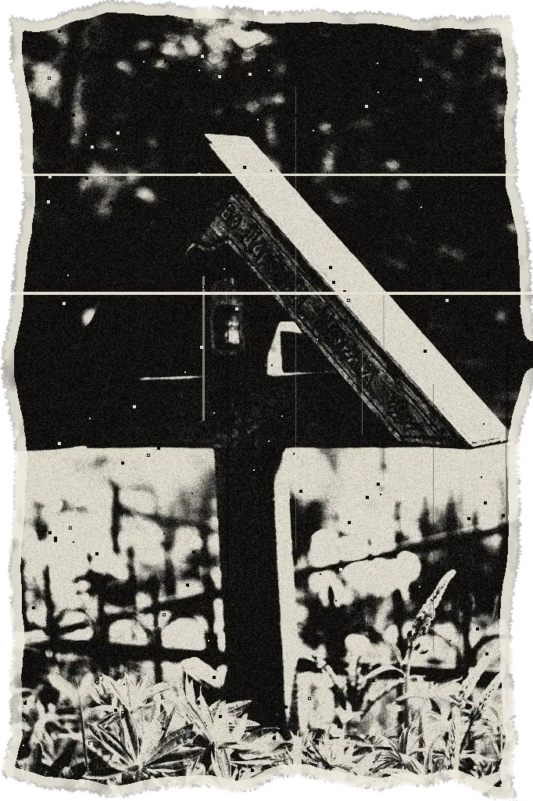


F / 03
Крыша над крестом
Голубец — крест, укрытый небольшой двускатной крышей, а порой заключённый в подобие домика, — форма могилы, которую и сегодня можно увидеть на русских кладбищах. У слова было и второе значение: пристройка у печи в крестьянской избе. Крыша защищает дерево; она же превращает крест в здание, а могилу — в жилище.
Атлас не картографирует его распространение и не называет форму типичной для Севера: опубликованные утверждения о «северном» ареале опираются на обследования, которых этот проект не изучал, а фотография одного образца — ещё не ареал. Единственный источник о форме и слове здесь — популярная статья, поэтому раздел остаётся интерпретацией.
F / 04
Новодевичье: некрополь как биография
Новодевичье кладбище в Москве стало в советское время местом, где государство хоронило своих признанных мёртвых: писателей, учёных, генералов, космонавтов. Могилы — предметы биографические. Резьба каменотёса, портрет, раскрытая книга, корабль, самолёт — каждый памятник — послужной список, высеченный в граните.
Два примера, зафиксированные на фотографиях, которыми пользуется этот атлас: могила Ильи Ильфа и двойной памятник писателю А. Н. Степанову и его жене, задуманный — по описанию фотографа — как два корабля на тёмном море. Атлас повторяет это описание как описание, а не как документированный замысел семьи.

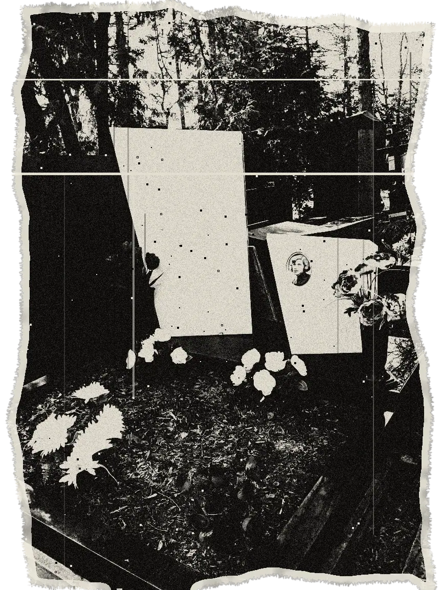
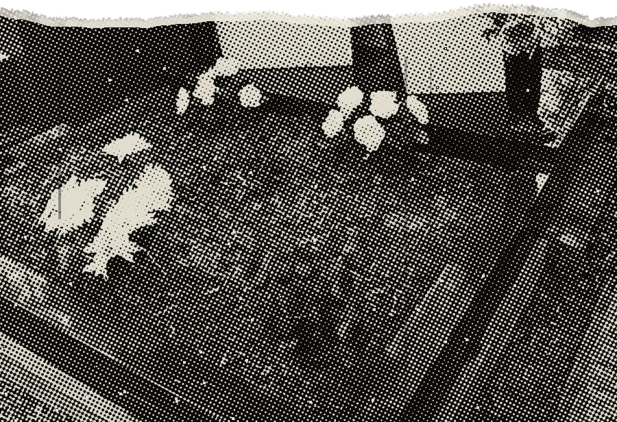


F / 11
Тобольск: закрытая земля, просьба старика, двое младенцев
Закон о кладбище дошёл до Сибири в виде бумаги. Указ Сената от 24 декабря 1771 года запретил хоронить у городских приходских церквей и требовал нового места за чертой города; Тобольская консистория распространила его на сёла своей епархии, и в 1783 году приход Абалака перенесли в Преображенское, а старый церковный комплекс стал монастырём. Погребения мирян в Абалаке прекратились. Но в августе 1815 года крестьянин Абалакской волости Алексей Вахрушев был похоронен внутри ограды монастыря после службы священника Преображенской церкви, без ведома местных властей. Игумен сообщил, что пожилой больной туберкулёзом и астмой человек перед смертью сам об этом просил. Губернское правление требовало эксгумации; прошло больше двадцати дней, и помешал санитарный риск. Указ Синода от 12 апреля 1833 года позже разрешил хоронить на закрытых кладбищах в исключительных случаях, например священников и крупных жертвователей, а в 1912–1913 годах консистория рассмотрела 19 прошений о погребении в церковных и монастырских оградах и отказала по одному.
У закона был и меньший край. Мёртворождённых и некрещёных детей можно было хоронить на общих кладбищах, но без обряда и поминовения. У заброшенной деревни Яркова Тобольского уезда археологи в 2015 году вскрыли раскоп в 50 м² на огородном участке у обрыва и нашли два детских погребения середины XIX — начала XX века: в колодах, неглубоких, со скрученными шнурами и фабричной тканью. Поскольку других могил рядом нет, авторы читают это как домашний участок для некрещёных младенцев. Это их прочтение, по двум погребениям, и источники не говорят, какая из двух давно живших семей им пользовалась.
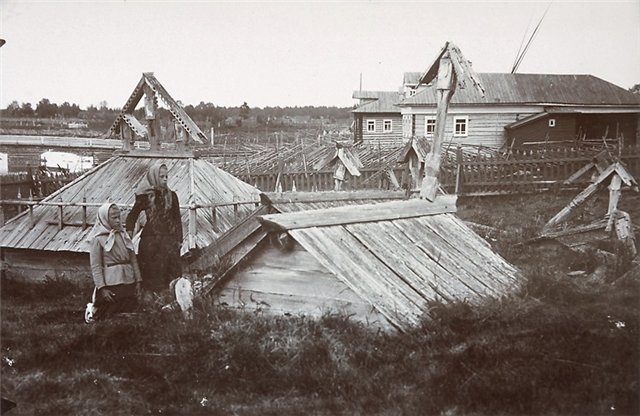
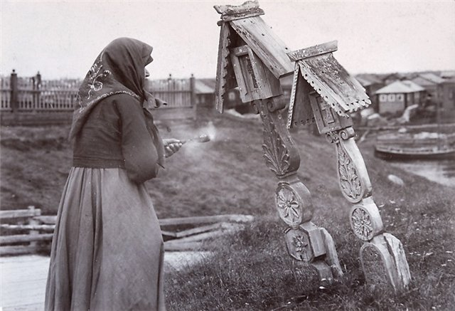
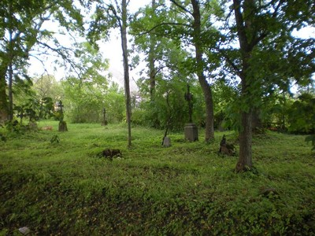
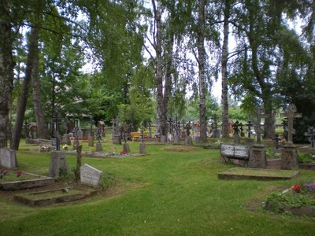
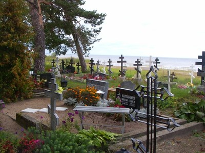
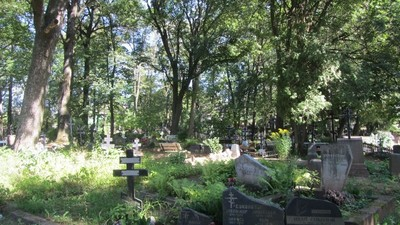
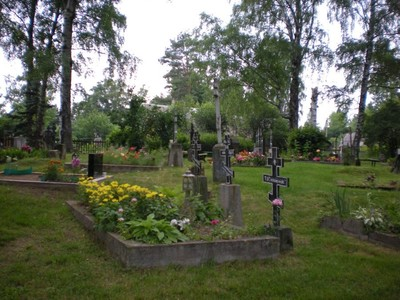
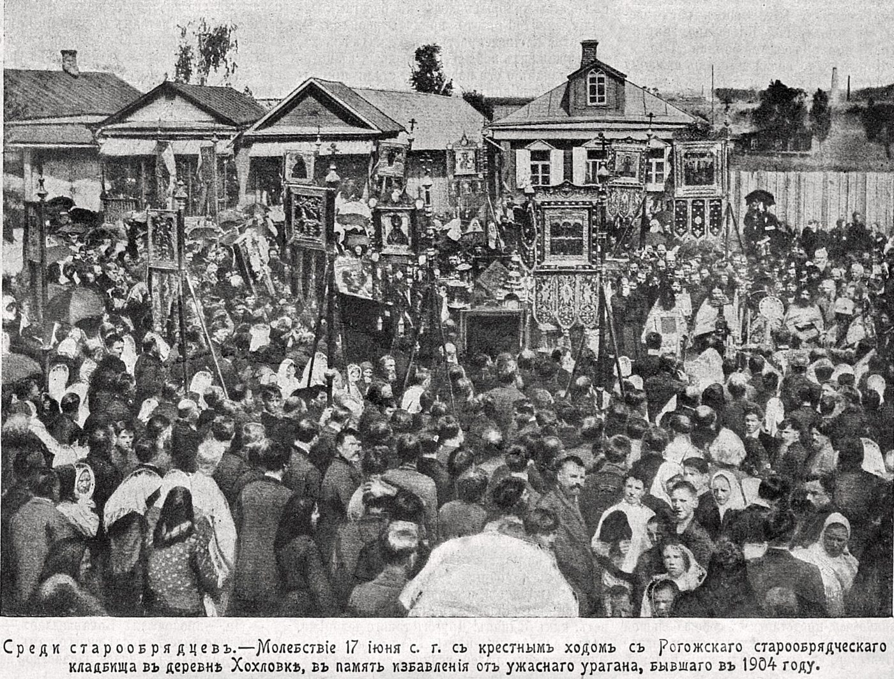
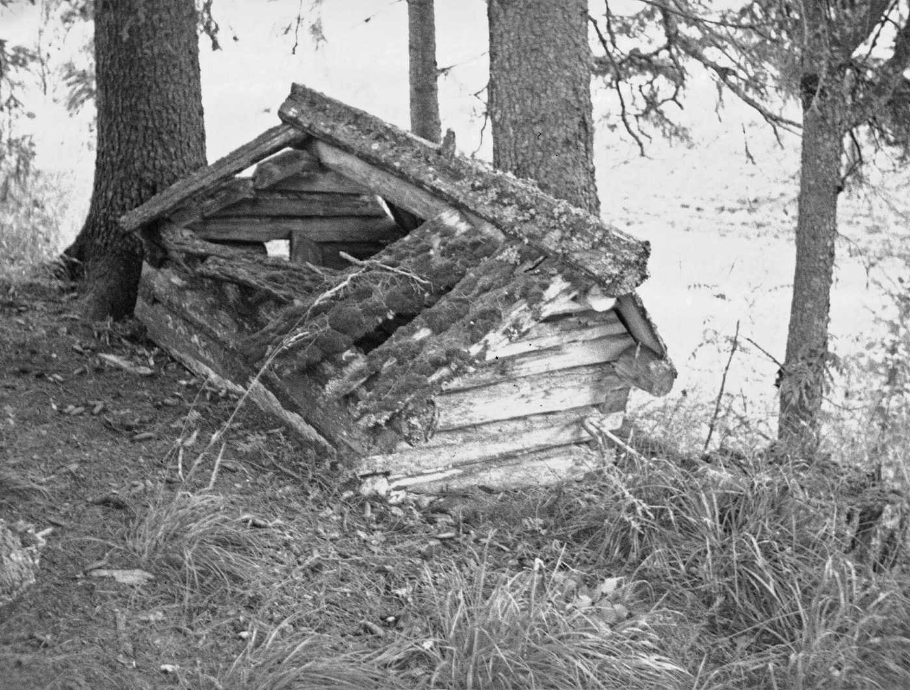
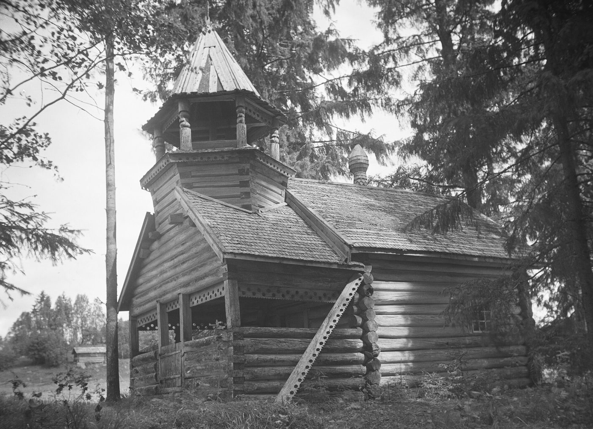
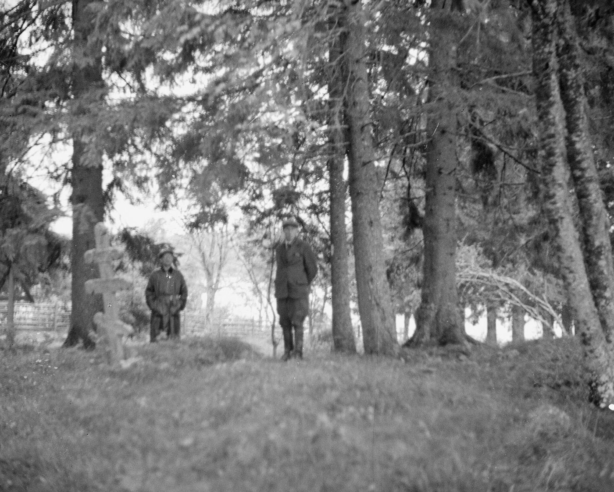
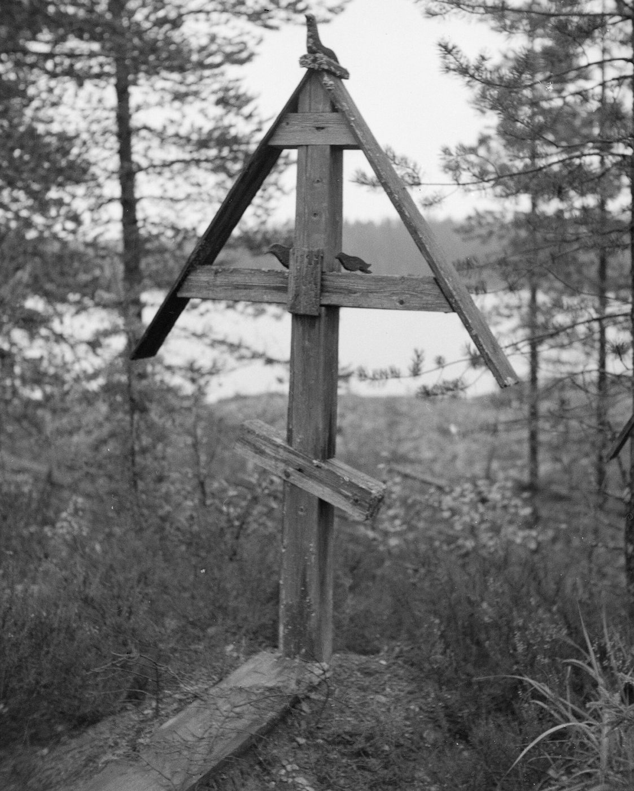
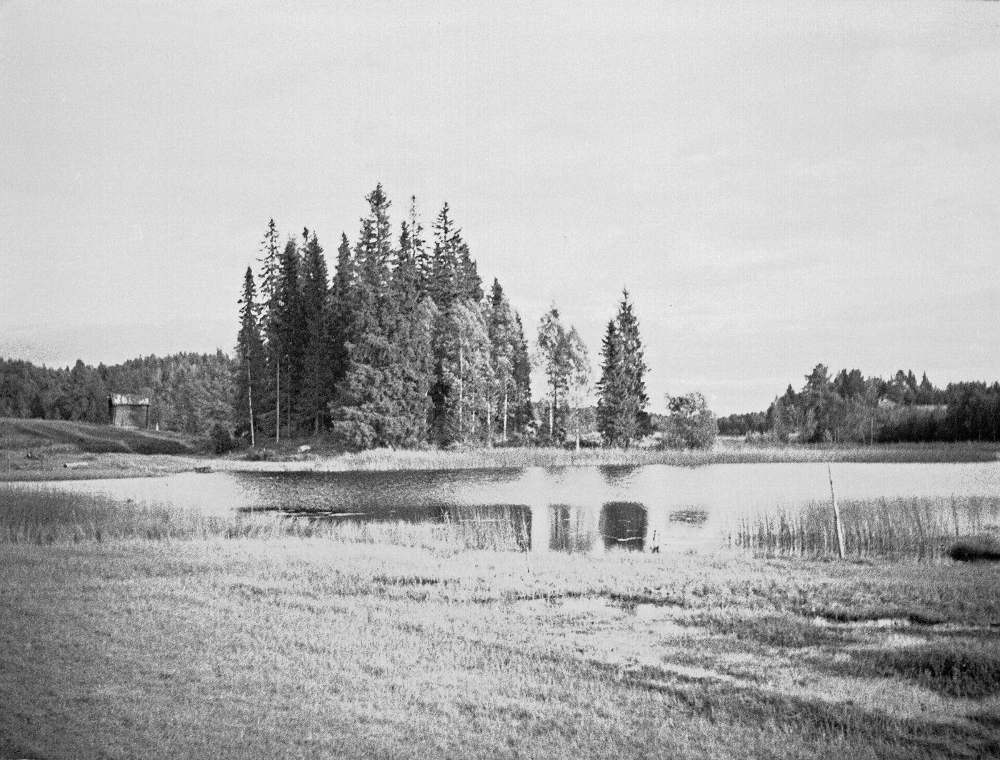
Аппарат источники · связанные листы · термины
Источники этого листа
- pravenc-nadgrobie Православная энциклопедия — Надгробие (2000– (издание продолжается))
- vagankovo Mos.ru (официальный портал города Москвы) — Материалы по истории Ваганьковского кладбища (б. д.)
- merridale2000 Merridale, Catherine — Night of Stone: Death and Memory in Russia (2000)
- tolstoy1995 Толстой, Никита Ильич (ред.); Толстая, Светлана Михайловна (ред. т. 5) — Славянские древности: Этнолингвистический словарь (1995–2012)
- danilov2018 Данилов П. Г. — Погребальная практика русского населения Тобольского Прииртышья в XVIII—XIX веках: случаи отступления от официального законодательства (2018)
- rozanov-moscow-cemeteries N. P. Rozanov — О московских городских кладбищах (nineteenth century (edition not established here))
- rambler-golubtsy Kirillitsa (Rambler Weekend, unsigned) — «Голубцы»: что так называли русские (n.d.)
Ссылки, даты обращения и ограничения — в списке источников.